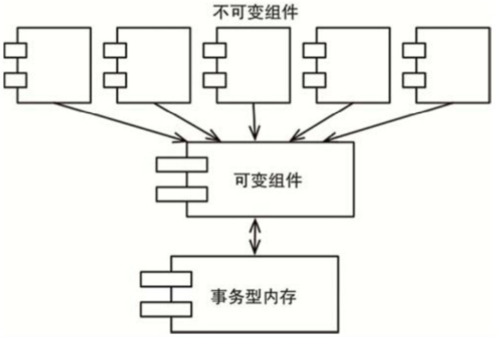

函数式编程所依赖的原理，在很多方面其实是早于编程本身出现的。因为函数式编程这种范式强烈依赖于Alonzo Church在20世纪30年代发明的λ演算。
什么是函数式编程
举个例子：计算0-25范围内整数的平方
Java版：
public class Squint {
public static void main(String args[]){
for (int i=0; i＜25; i++)
System.out.println(i*i);
}
}
下面我们改用Clojure语言来写这个程序，Clojure是LISP语言的一种衍生体，属于函数式编程语言。其代码如下：
(println(take 25(map(fn[x](* x x))(range))))
看不懂面的语言没有关系，我们讨论它的主要目标是要突显出Clojure和Java这两种语言之间的巨大区别。在Java程序中，我们使用的是可变量，即变量i，该变量的值会随着程序执行的过程而改变，故被称为循环控制变量。而Clojure程序中是不存在这种变量的，变量x一旦被初始化之后，就不会再被更改了。
这句话有点出人意料：函数式编程语言中的变量（Variable）是不可变（Vary）的。
不可变性与软件架构
为什么不可变性是软件架构设计需要考虑的重点呢？为什么软件架构师要操心变量的可变性呢？答案显而易见：所有的竞争问题、死锁问题、并发更新问题都是由可变变量导致的。如果变量永远不会被更改，那就不可能产生竞争或者并发更新问题。如果锁状态是不可变的，那就永远不会产生死锁问题。
换句话说，一切并发应用遇到的问题，一切由于使用多线程、多处理器而引起的问题，如果没有可变变量的话都不可能发生。
但是，能做到没有可变变量吗？即不可变性
如果我们能忽略存储器与处理器在速度上的限制，那么答案是肯定的。否则的话，不可变性只有在一定情况下是可行的。
可变性隔离
一种常见方式是将应用程序，或者是应用程序的内部服务进行切分，划分为可变的和不可变的两种组件。如下图：

由于状态的修改会导致一系列并发问题的产生，所以我们通常会采用某种事务型内存来保护可变变量，避免同步更新和竞争状态的发生。
要点是：一个架构设计良好的应用程序应该将状态修改的部分和不需要修改状态的部分隔离成单独的组件，然后用合适的机制来保护可变量。
事件溯源
举个简单的例子，假设某个银行应用程序需要维护客户账户余额信息，当它执行存取款事务时，就要同时负责修改余额记录。
如果我们不保存具体账户余额，仅仅保存事务日志，那么当有人想查询账户余额时，我们就将全部交易记录取出，并且每次都得从最开始到当下进行累计。当然，这样的设计就不需要维护任何可变变量了。
但显而易见，这种实现是有些不合理的。因为随着时间的推移，事务的数目会无限制增长，每次处理总额所需要的处理能力很快就会变得不能接受。如果想使这种设计永远可行的话，我们将需要无限容量的存储，以及无限的处理能力。
但是可能我们并不需要这个设计永远可行，而且可能在整个程序的生命周期内，我们有足够的存储和处理能力来满足它。
这就是事件溯源，在这种体系下，我们只存储事务记录，不存储具体状态。当需要具体状态时，我们只要从头开始计算所有的事务即可。
更重要的是，这种数据存储模式中不存在删除和更新的情况，我们的应用程序不是CRUD，而是CR。因为更新和删除这两种操作都不存在了，自然也就不存在并发问题。
如果我们有足够大的存储量和处理能力，应用程序就可以用完全不可变的、纯函数式的方式来编程。